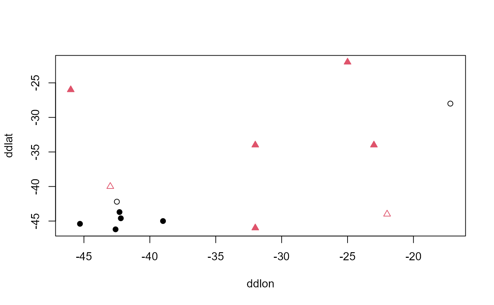

Compute changes in the extent of occurrences (EOO) in square kilometers using occurrence data with different confidence level and quantifies indirectly the most influential occurrences related to EOO estimation.
EOO.sensitivity(
XY,
levels.order,
occ.based = TRUE,
value = "dist",
exclude.area = FALSE,
country_map = NULL,
alpha = 1,
buff.alpha = 0.1,
method.range = "convex.hull",
method.less.than3 = "not comp",
file.name = "EOO.sensitivity.results",
parallel = FALSE,
NbeCores = 2,
show_progress = TRUE,
proj_type = "cea",
mode = "spheroid",
min.dist = 0.1
)data.frame see Details
a character vector with at least two classes ordered from the least confident to the more confident class of records. See Details.
logical. Should the measure of influence of each record be returned? Default to TRUE.
output value: proportional distance ("dist") or inside/outside the polygon ("flag")?
a logical, if TRUE, areas outside of country_map
are cropped of SpatialPolygons used for calculating EOO. By default
is FALSE
a SpatialPolygonsDataFrame or
SpatialPolygons showing for example countries or continent borders.
This shapefile will be used for cropping the SpatialPolygonsl if
exclude.area is TRUE
a numeric, if method.range is "alpha.hull", value of
alpha of the alpha hull, see alphahull::ahull(). By default is 1
a numeric, if method.range is "alpha.hull", define
the buffer in decimal degree added to alpha hull. By default is 0.1
a character string, "convex.hull" or "alpha.hull". By default is "convex.hull"
a character string. If equal to "arbitrary", will give a value to species with two unique occurrences, see Details. By default is "not comp"
a character string. Name file for exported results in csv file. By default is "EOO.sensitivity.results"
a logical. Whether running should be performed in parallel. FALSE by default.
an integer. Register the number of cores for parallel execution. Two by default.
logical. Whether progress informations should displayed. TRUE by default
string or numeric
character string either 'spheroid' or 'planar'. By default 'spheroid'
minimum tolerated distance between polygons and points. Default to 0.1 m.
A data frame containing, for each taxon, the EOO in square kilometres for each level of confidence or a list containing this same data frame and the input data with a new column for each confidence level with a measure of influence of the occurrences on the estimation of EOO.
Input as a data.frame should have the following structure:
It is mandatory to respect field positions, but field names do not matter
The first column is contains numeric value i.e. latitude in decimal degrees
The second column is contains numeric value i.e. longitude in decimal degrees
The third column is contains character value i.e. the names of the species
The function works with a minimum of two classes, that can be, for example, levels of
confidence in the geographical coordinates, the taxonomic determination or a
period of collection year. For each confidence level, the EOO is computed for
a more restricted and reliable set of records. It is essential that the
classes of confidence level provided using the argument levels.order.
For instance, these classes can simply be c("low", "high") or c(FALSE, TRUE). But they should match the classes provided in XY.
If argument occ.based is TRUE (default), the function calculates and
return a measure of influence of each occurrence on the estimation of EOO.
This measure is simply the distance of each occurrence to the convex hull
polygon (i.e. EOO) obtained using only with the occurrences in the highest level
of confidence declared, divided by the 95% quantile of the pair-wise
distances of the occurrences within the high confidence EOO. Thus, this is
only an indirect measure of how much the EOO should increase if a given
occurrence was included, because in practice the difference in EOO is not
calculated for subsets with and without each occurrence (i.e leave-one-out
cross validation).
The measure is thus a proportion and the highest the value, the more distant
the occurrence is from the high confidence EOO. Zeros means that the
occurrence is within the high confidence EOO and NA means that the high
confidence EOO could not be obtained (e.g. less than 2 or 3 high confidence
occurrences).
Note that even if the EOO cannot be calculated or if coordinates were
missing, the function returns a zero for all occurrences with the highest
confidence level, which would be by definition within the high confidence
EOO.
It is up to the user to define the most appropriate threshold to include or exclude occurrences. A preliminary assessment assuming a circular high confidence EOO suggest that values of 0.5, 1 and 2 would lead to increases of about 25, 50 and 100% in EOO.
As mentioned above, EOO will only be computed if there is at least three
unique occurrences in the high confidence level class, unless
method.less.than3 is put to "arbitrary". In that specific case, EOO
for species with two unique occurrences will be equal to DistDist0.1 where
Dist is the distance in kilometers separating the two points.
For the very specific (and infrequent) case where all occurrences are localized on a straight line (in which case EOO would be null), 'noises' are added to coordinates. There is a warning when this happens.
Notes on computational time The processing time depends on several
factors, including the total number of occurrences, number of confidence
levels provided and user's computer specifications. Using argument parallel
equals TRUE, greatly increase the processing time, but the processing of
large data sets (millions of occurrences) may take hours. On a Intel Core i5,
CPU 1.70GHz, 64-bit OS and 16 GB RAM it took 20 min to process about 800
thousand records from ~5100 species using 5 cores.
Nic Lughadha, Staggemeier, Vasconcelos, Walker, Canteiro & Lucas (2019). Harnessing the potential of integrated systematics for conservation of taxonomically complex, megadiverse plant groups. Conservation Biology, 33(3): 511-522.
Gaston & Fuller (2009). The sizes of species' geographic ranges. Journal of Applied Ecology, 46(1): 1-9.
mydf <- data.frame(ddlat = c(-44.6,-46.2,-45.4,-42.2,-43.7,-45.0,-28.0,-44.0,
-26.0,-34.0,-22.0,-40.0,-46.0,-34.0),
ddlon = c(-42.2,-42.6,-45.3,-42.5,-42.3,-39.0,-17.2,-22.0,
-46.0,-23.0,-25.0,-43.0,-32.0,-32.0),
tax = rep(c("a", "b"), each=7),
valid = c(c(TRUE,TRUE,TRUE,FALSE,TRUE,TRUE,FALSE),
c(FALSE,TRUE,TRUE,TRUE,FALSE,TRUE,TRUE)))
plot(mydf[,2:1], col = as.factor(mydf$tax),
pch = as.double(as.factor(mydf$tax)))
points(mydf[mydf$valid,2:1], col = as.factor(mydf$tax)[mydf$valid],
pch = 15 + as.double(as.factor(mydf$tax))[mydf$valid])

EOO.sensitivity(mydf, levels.order = c(FALSE, TRUE))
#>
|
| | 0%
|
|================== | 25%
|
|=================================== | 50%
|
|==================================================== | 75%
|
|======================================================================| 100%
#> EOO differences...
#> Starting the occurrence-based analysis...
#>
|
| | 0%
|
|=================================== | 50%
|
|======================================================================| 100%
#> Returning the results.
#> $results
#> ddlat ddlon tax valid recordID classes rel_dist
#> 8 -44 -22 b FALSE 8 2 0.210
#> 9 -26 -46 b TRUE 9 1 0.000
#> 10 -34 -23 b TRUE 10 1 0.000
#> 11 -22 -25 b TRUE 11 1 0.000
#> 12 -40 -43 b FALSE 12 2 0.159
#> 13 -46 -32 b TRUE 13 1 0.000
#> 14 -34 -32 b TRUE 14 1 0.000
#>
#> $results_occ
#> recordID ddlat ddlon tax valid classes rel_dist
#> 1 1 -44.6 -42.2 a TRUE 1 0.000
#> 2 2 -46.2 -42.6 a TRUE 1 0.000
#> 3 3 -45.4 -45.3 a TRUE 1 0.000
#> 4 4 -42.2 -42.5 a FALSE 2 0.338
#> 5 5 -43.7 -42.3 a TRUE 1 0.000
#> 6 6 -45.0 -39.0 a TRUE 1 0.000
#> 7 7 -28.0 -17.2 a FALSE 2 5.445
#> 8 8 -44.0 -22.0 b FALSE 2 0.210
#> 9 9 -26.0 -46.0 b TRUE 1 0.000
#> 10 10 -34.0 -23.0 b TRUE 1 0.000
#> 11 11 -22.0 -25.0 b TRUE 1 0.000
#> 12 12 -40.0 -43.0 b FALSE 2 0.159
#> 13 13 -46.0 -32.0 b TRUE 1 0.000
#> 14 14 -34.0 -32.0 b TRUE 1 0.000
#>
#> $spatial
#> Simple feature collection with 4 features and 2 fields
#> Geometry type: POLYGON
#> Dimension: XY
#> Bounding box: xmin: -46 ymin: -46.2 xmax: -17.2 ymax: -22
#> Geodetic CRS: WGS 84
#> tax name geometry
#> spatial.polygon_1 a a___1 POLYGON ((-42.37049 -46.128...
#> spatial.polygon_2 b b___1 POLYGON ((-23.01758 -33.906...
#> spatial.polygon_3 a a___1_2 POLYGON ((-38.89315 -44.942...
#> spatial.polygon_4 b b___1_2 POLYGON ((-22.01805 -43.843...
#>